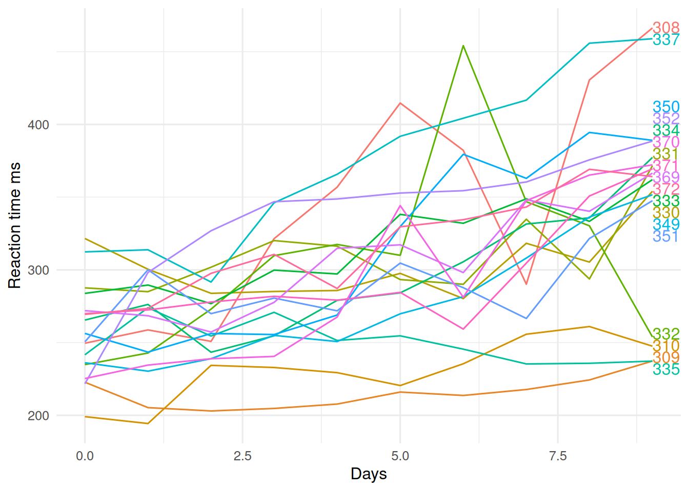
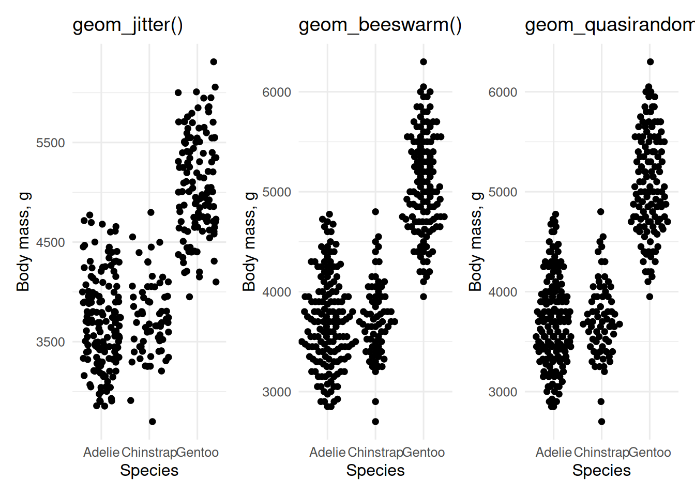
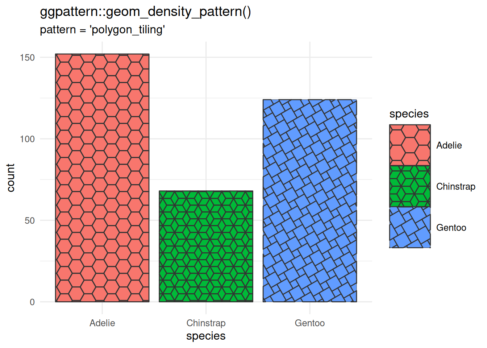
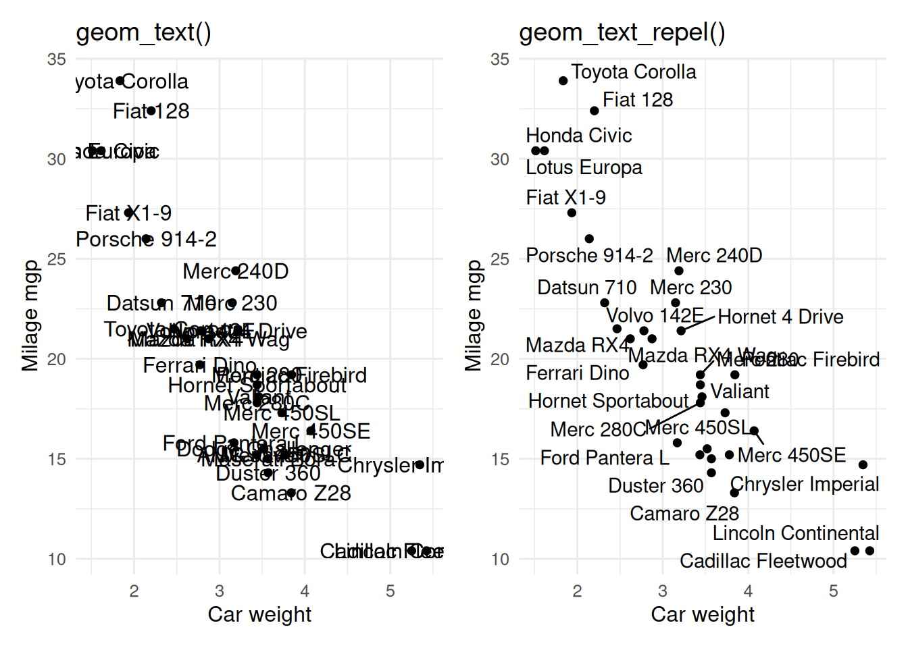
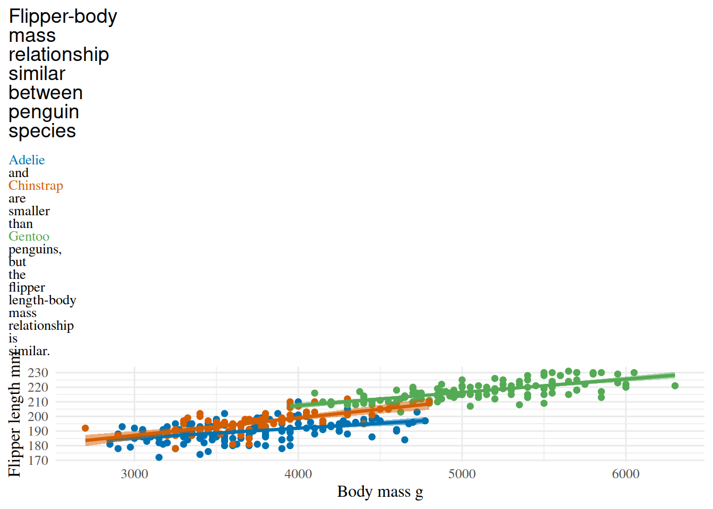

library(directlabels)
p <- ggplot(lme4::sleepstudy, aes(x = Days, y = Reaction, colour = Subject)) +
geom_line() +
labs(y = "Reaction time ms")
direct.label(p, method = "last.qp") # last - go after plot, qp - don't overlap


ggplot2 is the heart of a vast network of packages that enhance it. This a an annotated list of packages that I find useful.
directlabels
The directlabels package helps add labels to plots as a alternative to including a legend.
library(directlabels)
p <- ggplot(lme4::sleepstudy, aes(x = Days, y = Reaction, colour = Subject)) +
geom_line() +
labs(y = "Reaction time ms")
direct.label(p, method = "last.qp") # last - go after plot, qp - don't overlap
GGally
Among other functions, GGally includes ggpairs() which makes a matrix of plots, plotting each variable in a dataset against every other variable. This is a useful exploratory method. Different combinations of variable types (continuous vs categorical) get different types of plot.
gganimate
It won’t animate a Disney film, but gganimate will help bring your data to life.
No renderer backend detected. gganimate will default to writing frames to separate files
Consider installing:
- the `gifski` package for gif output
- the `av` package for video output
and restarting the R sessionlibrary(gapminder) # world health data
ggplot(gapminder, aes(x = gdpPercap, y = lifeExp, size = pop, colour = continent)) +
geom_point(alpha = 0.7) +
scale_colour_manual(values = continent_colors) +
scale_size(range = c(2, 12), guide = "none") +
scale_x_log10() +
theme(
legend.position = "inside",
legend.position.inside = c(0.99, 0.01),
legend.justification = c(1, 0)
) +
labs(
title = "Year: {frame_time}", x = "GDP per capita US$",
y = "Life expectancy yr", colour = "Continent"
) +
transition_time(year) # animates ggplotWarning: No renderer available. Please install the gifski, av, or magick package to
create animated outputNULLThis is not so useful for traditional journals (except perhaps in supplementary material), but some new journal may accept animations and other video. It is good for presentations and websites.
ggbeeswarm
ggbeeswarm includes geom_quasirandom() and geom_beeswarm() which are alternatives to geom_jitter() for plotting data with a continuous dependent variable and categorical independent variable.

geom_jitter() and alternatives from the ggbeeswarm package
ggfortify
The ggfortify package includes autoplot() functions for several types of objects, including (generalised) linear models, time series, and survival analyses.
gghighlight
The gghighlight package helps highlight part of the data see Section 21.1.1.4 for an example.
ggiraph
The ggiraph lets you make interactive plots. Use geom_*_interactive() to get tooltips.
library(ggiraph)
# remove ' from cote d'Ivoire
gapminder <- gapminder |>
mutate(country2 = str_replace(country, "'", "")) |>
filter(year == 1972)
p <- ggplot(
gapminder,
aes(x = gdpPercap, y = lifeExp, colour = continent, size = pop)
) +
geom_point_interactive(aes(tooltip = country, data_id = country2, alpha = 0.7)) +
scale_colour_manual(values = continent_colors) +
scale_size(range = c(2, 12), guide = "none") +
scale_x_log10() +
theme(legend.position = "none") +
labs(x = "GDP per capita US$", y = "Life expectancy yr", colour = "Continent")
girafe(
ggobj = p,
options = list(opts_hover(css = "fill: red"))
)ggpattern
Bored with solid fills? ggpattern can give you textured fills with geom_*_pattern() where the * is any of the geoms that take a fill argument.
library(ggpattern)
ggplot(penguins, aes(x = species)) +
geom_bar_pattern(
aes(
pattern_fill = species,
pattern_type = species
),
pattern = "polygon_tiling"
) +
scale_pattern_type_manual(values = c("hexagonal", "rhombille", "pythagorean")) +
theme(legend.key.size = unit(1.5, "cm")) + # larger legend
labs(
title = "ggpattern::geom_density_pattern()",
subtitle = "pattern = 'polygon_tiling'"
)
geom_bar_pattern() showing three different pattern types.
ggraph
The ggraph package lets you plot network graphs, including dendrograms.
ggrepel
If you want to label points on a plot, but the labels overlap, ggrepel can help.
library(ggrepel)
# base plot
p <- ggplot(mtcars, aes(x = wt, y = mpg, label = rownames(mtcars))) +
geom_point() +
labs(x = "Car weight", y = "Milage mgp")
# add labels (use geom_label/geom_label_repel to add background rectangle to text)
p1 <- p + geom_text() + ggtitle("geom_text()")
p2 <- p + geom_text_repel() + ggtitle("geom_text_repel()")
# combine with patchwork
p1 + p2
geom_text() and geom_text_repel()
ggspatial
The ggspatial package helps plot maps. See ?sec-map-making for some examples using this package.
ggtext
The ggtext package lets you use markdown wherever there is text in a plot. This lets you add formatting (colour, bold, italics etc) to text (with geom_richtext()) or axis labels and titles by using element_markdown() in the theme. This can be an alternative to using a legend.
library(ggtext)
ggplot(penguins, aes(x = body_mass, y = flipper_len, color = species)) +
geom_point() +
geom_smooth(method = "lm", aes(fill = after_scale(colour)), alpha = 0.5) +
scale_color_manual(
values = c(Adelie = "#0072B2", Chinstrap = "#D55E00", Gentoo = "#55aa55"),
guide = "none" # one way to drop legends
) +
labs(
x = "Body mass g",
y = "Flipper length mm",
# title has formatting
title = "<span style = 'font-size:14pt; font-family:Helvetica;'>
Flipper-body mass relationship similar between penguin species</span><br>
<span style = 'color:#0072B2;'>Adelie</span> and
<span style = 'color:#D55E00;'>Chinstrap</span>
are smaller than <span style = 'color:#55aa55;'>Gentoo</span> penguins,
but the flipper length-body mass relationship is similar."
) +
theme(
text = element_text(family = "Times"),
plot.title.position = "plot",
plot.title = element_markdown(size = 10, lineheight = 1.2)
)
ggvegan
ggvegan (install from GitHub) has autoplot() functions to plot ordinations and other objects from the vegan package.
patchwork
patchwork is used to combine plots into a single figure. See Chapter 23 for information on how to use this package.